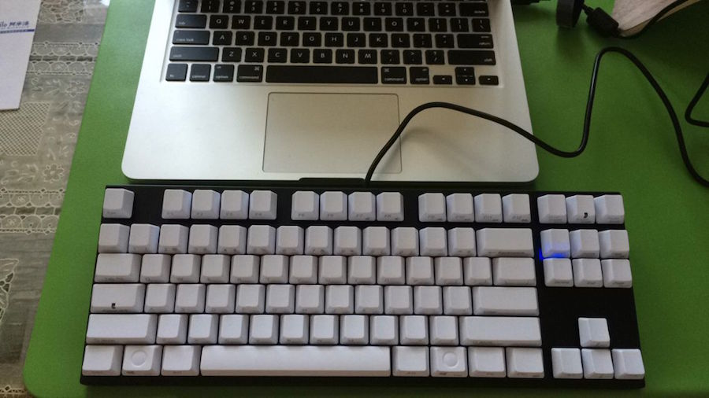

法珞的备忘录
关于
归档
首页
新键盘
今天买了把新键盘。仍然是国产的87键，青轴。之所以买它是因为两点原因：1、样子还算很喜欢；2、蓝牙。机械键盘的选择有很多，但是加上“蓝牙”这个要求后，选择的余地就缩小了不少。今天到的这把还算满意吧，第一次连OSX系统时不知道为什么command键（也就是WIN键）失灵了，断开重连就好了。现在用了一晚上再也没出问题。附送的USB线是充电用的，听说充满后能使用600小时。也不知道得充多久能满。

(Fin.)
Copyright © Faluo